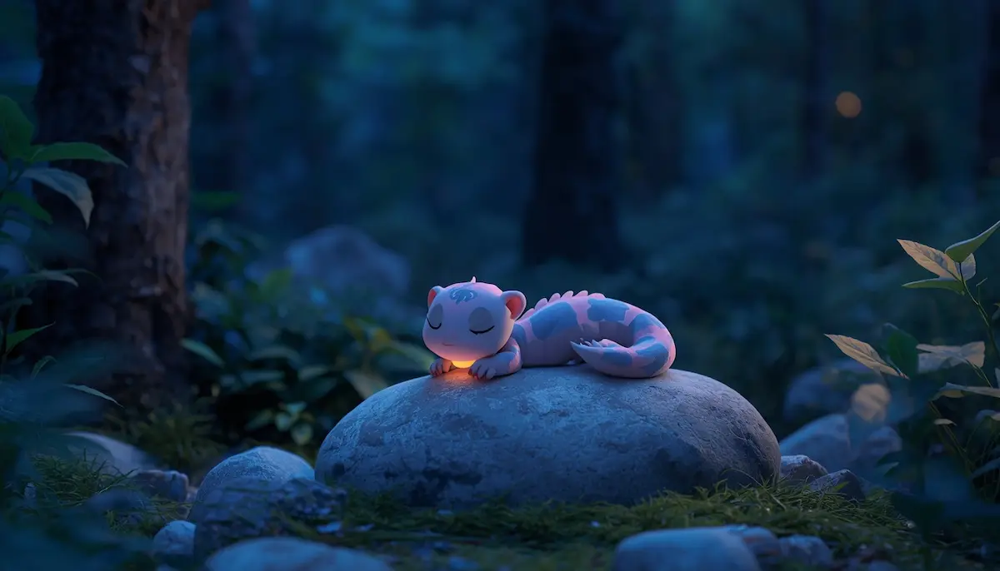
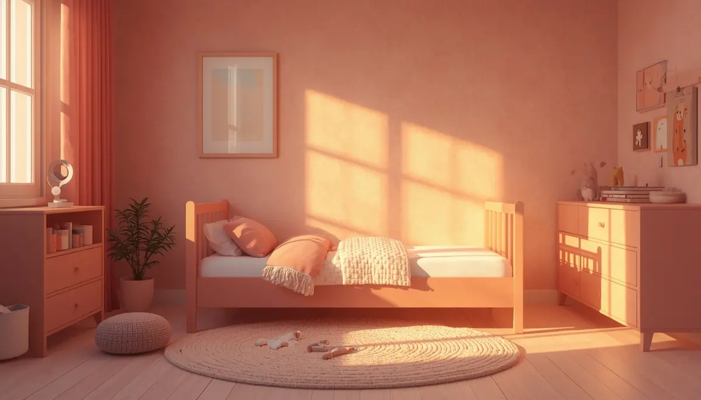
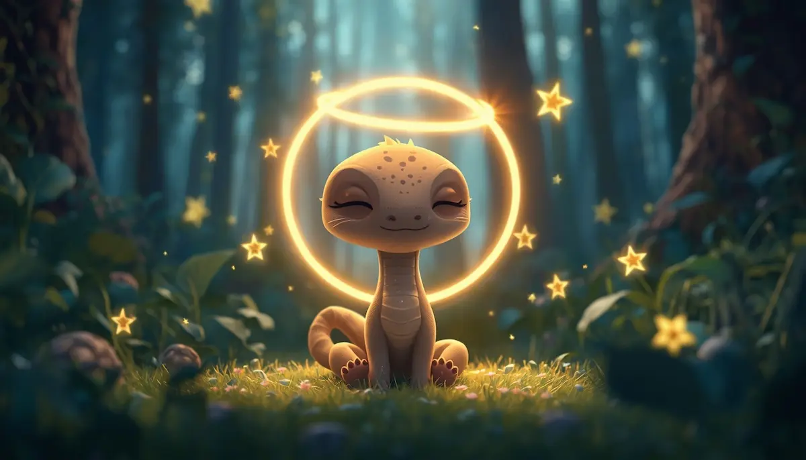
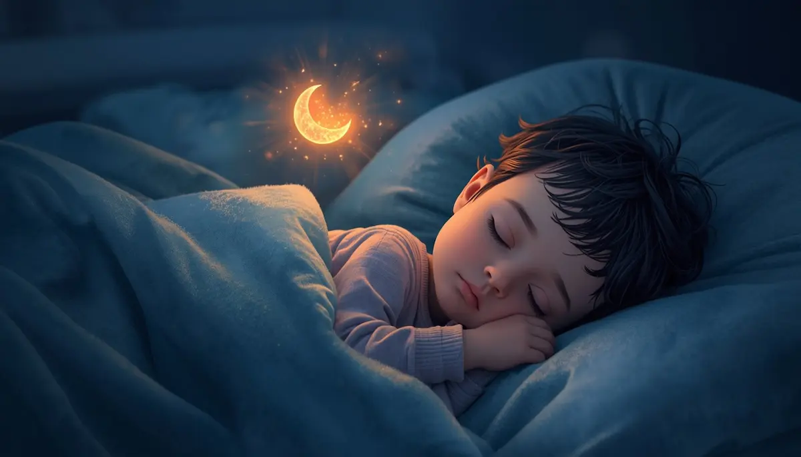
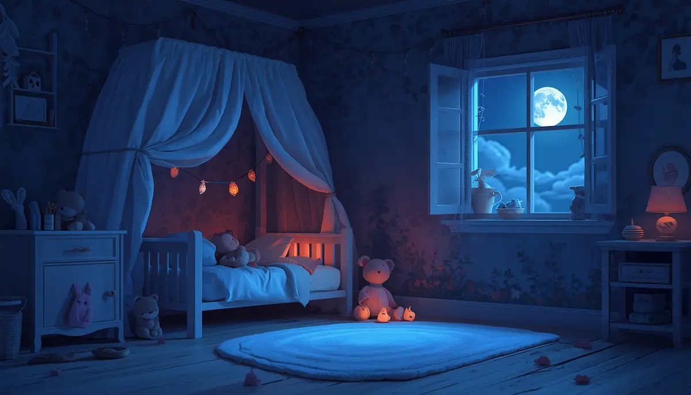

10. La luciérnaga que no encontraba su luz

¡Hola, pequeño explorador! Acomódate bien bajo tus mantas. Hoy vamos a viajar por un caminito de hojas secas hasta un bosque lleno de magia, para conocer a una pequeña luciérnaga que buscaba su luz en todas partes, menos en ella misma.
Al principio, nuestra pequeña amiga creía que su valor dependía de que otros la miraran, o de brillar con tanta fuerza como el sol del mediodía. A veces nos pasa igual: miramos fuera esperando que nos digan que lo estamos haciendo bien. Pero ella descubrió un gran secreto: su luz no se enciende con un botón externo, sino que es un tesoro escondido que siempre ha estado dentro de ella, esperando ser descubierto. Las dudas y los miedos son solo pequeñas nubes que tapan el cielo del corazón por un ratito, pero el brillo siempre sigue ahí.

Una noche, mientras volaba despacito entre las hojas de los árboles, la luciérnaga decidió sentarse sobre una piedra suave a descansar. Cerró sus ojitos y empezó a notar el aire fresco en sus antenitas. Comprendió que no tenía prisa por brillar con fuerza, ni tenía que demostrarle nada a nadie.
Imagina que tú eres esa luciérnaga descansando en el bosque. Siente cómo tus hombros se vuelven pesados y se relajan, soltando el cansancio de todo el día. Siente tus manitas y tus pies cada vez más blanditos, hundiéndose suavemente en la cama. Ya no hay nada que hacer, ni ningún lugar a donde ir. Solo existe este momento de calma, el sonido del viento entre las ramas y la seguridad de estar en casa.

Escúchame bien, pequeño explorador. A veces puedes sentir que no eres tan rápido, tan alto o tan brillante como los demás. Pero quiero decirte un secreto: tú tienes una luz personal que es única en el mundo entero.

Tu valor no está en lo que los demás opinen, sino en quién eres tú de verdad. Ser amable contigo mismo es como ponerte una chaqueta calentita o recibir un abrazo cuando tienes frío. Cuando te equivoques, no te preocupes; el error es solo una forma de aprender, y tu superhéroe interior siempre está listo para ayudarte con cariño. ¡Tú eres el dueño de tu propio brillo!

Para despedirnos y prepararnos para descansar profundamente, vamos a hacer una respiración muy suave.
Pon tus manos en tu tripita, como si estuvieras sosteniendo con mucho cuidado a una luciérnaga pequeña, cálida y brillante. Inspira hondo por la nariz y siente cómo tu barriga se infla como un globo de luz dorada. Suelta el aire muy despacio por la boca, imaginando que esa luz viaja desde tu corazón hacia todo tu cuerpo, dándote fuerza, descanso y paz.

Recuerda: estás a salvo, estás en casa y llevas todo el brillo que necesitas dentro de ti.
¡Buenas noches y que descanses con los ojitos cerrados!